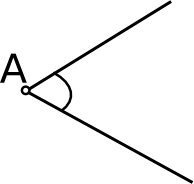

Nurk

Nurk
Nurk
on geomeetriline kujund, mille moodustavad kaks ühest punktist väljuvat kiirt. Nurga suurust mõõdetakse kraadides.
T
äisnurgaks
nimetatakse 90 kraadist nurka ehk nurka, kus nurga moodustavad kiired on teineteisega risti.